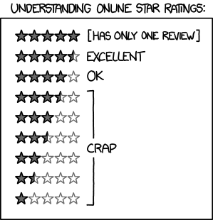
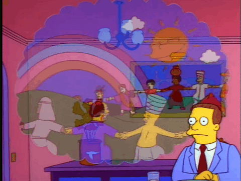

Lab session 6: Recommender Systems
Session objectives
🎯 General objective:
Understand the fundamental ideas behind recommender systems and learn how to design, implement, and evaluate simple recommendation models using Orange. You will explore different approaches — popularity-based, content-based, and collaborative filtering — and compare their advantages and limitations.
Recommender systems are the invisible engines that personalize our digital experiences. They guide what we watch on Netflix, what we buy on Amazon, and even what we read next on Goodreads. By learning user preferences and item relationships, these systems predict which items are most relevant to each user, increasing both satisfaction and engagement.
In this lab, you will:
- Explore the data used to train recommender systems.
- Implement and evaluate three main recommendation strategies:
- Popularity-based models, which suggest what’s generally liked.
- Content-based filtering, which finds items similar to what a user already likes.
- Collaborative filtering, which relies on the wisdom of similar users.
Before starting, make sure you have the Orange environment ready. The orange3-recommendation add-on extends Orange with tools specifically for building recommender systems:
conda activate orange3
pip install orange3-recommendationThis package provides additional widgets for building recommender systems in Orange.
1. Data exploration and preprocessing
🎯 Objective: Explore the dataset to understand its structure, features, and potential issues.
In this section, we will explore the book recommendation dataset. This dataset has been built from different users who have rated various books and your objective will be to be able to make recommendations based on this information.
Load the dataset from the following link and explore its structure. Use the File widget in Orange to load the dataset and visualize its contents using the Data Table widget. Visualise the distribution of ratings using the Distributions widget.
Partition the data into training and testing sets using the Data Sampler widget. This will allow us to evaluate the performance of our recommender systems later.
📝 Questions:
- What are the key features of the dataset that can be used for building recommender systems?
- How can we handle missing values or inconsistencies in the dataset?
- What can we infer from the distribution of ratings?
2. Popularity-based recommendation
🎯 Objective: Implement a popularity-based recommendation system and evaluate its performance.

In this section, we will implement a simple way to recommend books based on the ratings. We will calculate what is the most likely book that a user would like based on the ratings of other users. Specifically, we will calculate the mean rating of each book and recommend the books with the highest average ratings.Note that a popularity-based recommender ignores individual user preferences. Instead, it assumes that items liked by many users are more likely to be liked by a new user.
To do this, we will use the Baselines widget in Orange. Pass the training data and configure it to calculate the user average as the recommendation strategy. Then, connect the output to a Predictions widget to evaluate its performance with the test data.
Repeat the process using the average rating of each book as the recommendation strategy. Compare the results of both approaches.
📝 Questions:
- What are the key features used in the popularity-based recommendation system?
- How does the choice of recommendation strategy (user average vs. item average) affect the performance of the system?
- What are the limitations of popularity-based recommendation systems?
3. Content-based filtering
🎯 Objective: Implement a content-based filtering recommender system and evaluate its performance.
In this section, we will implement a content-based filtering recommender system. This approach recommends items based on the similarity between items. We will use the features of the books (e.g., genre, author, etc.) to calculate the similarity between books. To do this, we will consider a scenario in which the user tells us which book they like and we will recommend similar books based on that information.
To implement this, we will use the books features, available here, and load them into Orange using the File widget. Then, we will use the Distance widget to calculate the similarity between books based on their features. You can visualize the similarity matrix using the Distance matrix widget.
Next, we will use the Python Script widget to create a custom recommendation function that takes a book and recommends similar books based on the similarity matrix. To do so, we need to have as input the similarity matrix and the data of all the books that we have loaded with the File widget. The Python code can be as follows:
import numpy as np
# --- Choose the book you want to query ---
book_title = "Harry Potter and the Goblet of Fire (Book 4)" # You can change this to any book in the dataset
# --- Inputs from Orange ---
data = in_data # Orange Table
dist = np.array(in_object) # DistMatrix as NumPy array
# Extract book titles from metas (adjust the field name if needed)
book_names = [str(inst["title"]) if "title" in data.domain else str(inst.metas[0]) for inst in data]
# Try to find the index of the chosen book
try:
idx = book_names.index(book_title)
except ValueError:
print(f"❌ Book '{book_title}' not found!")
idx = None
if idx is not None:
# Get distances from this book to all others
distances = dist[idx]
# Find the 5 nearest (excluding itself)
nearest_idx = np.argsort(distances)[1:6]
print(f"\n📚 5 most similar to '{book_title}':\n")
for i in nearest_idx:
print(f" {book_names[i]} (distance = {distances[i]:.3f})")Try it with different books and see the recommendations.
📝 Questions:
- What are the key features used in the content-based filtering system?
- How does the choice of similarity metric affect the recommendations?
- What are the limitations of content-based filtering systems?
4. Collaborative filtering
🎯 Objective: Implement a collaborative filtering recommender system and evaluate its performance.

Finally, we will implement a collaborative filtering recommender system. This approach recommends items based on the preferences of similar users. We will use the ratings given by users to find similar users and recommend books that those users liked.Here we will focus on a type of collaborative filtering called matrix factorization. This method decomposes the user-item interaction matrix into two lower-dimensional matrices, one representing users and the other representing items. The dot product of these matrices can be used to predict missing ratings: \[ R \approx P \cdot Q^T, \] where (R) is the original user-item interaction matrix, (P) is the user feature matrix, and (Q) is the item feature matrix.
To implement this, we will use the BRISMF widget in Orange. Pass the training data to the widget and configure its parameters (e.g., number of factors, regularization). Then, connect the output to a Predictions widget to evaluate its performance with the test data.
We can also visualize the latent features learned by the model using the low dimensional representation of users and items. Use the t-SNE widget to reduce the dimensionality of the item feature matrix (matrix(Q)) and visualize it using the Scatter Plot widget.
📝 Questions:
- What are the key features used in the collaborative filtering system?
- How does matrix factorization improve the recommendations?
- What are the limitations of collaborative filtering systems?
5. Recommendation using Surprise
🎯 Objective: Implement a recommendation system using the Surprise library and evaluate its performance.
In this section, we will implement a recommendation system using the Surprise library, which is a Python scikit for building and analyzing recommender systems. Surprise provides various algorithms for collaborative filtering, including matrix factorization techniques like SVD.
To use Surprise within Orange, we can utilize the Python Script widget. Below is an example code that demonstrates how to use Surprise to build a recommendation model using the SVD algorithm. This code assumes that the input data has been preprocessed and contains the necessary columns: userID, bookID, and rating.
# --- Imports ---
import pandas as pd
from surprise import Reader, Dataset, SVD
from surprise.model_selection import cross_validate
# --- Extract data from Orange input ---
# in_data is an Orange Table object automatically provided by Orange
# We need to convert it to a pandas DataFrame
df = pd.DataFrame(in_data.X, columns=[var.name for var in in_data.domain.attributes])
# If the target variable (rating) is in Y:
if in_data.domain.has_continuous_class or in_data.domain.has_discrete_class:
df["rating"] = in_data.Y
# If userID and bookID are stored as metas:
for i, var in enumerate(in_data.domain.metas):
df[var.name] = [str(val) for val in in_data.metas[:, i]]
# --- Inspect your dataframe ---
print(df.head())
# Make sure it has columns: userID, bookID, rating
# If not, rename accordingly
df = df.rename(columns={
"userID": "userID",
"bookID": "bookID",
"rating": "bookRating"
})
# --- Prepare the Surprise dataset ---
reader = Reader(rating_scale=(1, 10))
data = Dataset.load_from_df(df[["userID", "bookID", "bookRating"]], reader)
# --- Train a simple model using SVD ---
algo = SVD()
# Evaluate with 3-fold cross-validation
results = cross_validate(algo, data, measures=['RMSE', 'MAE'], cv=5, verbose=True)
print("\n✅ Cross-validation results:")
for key, value in results.items():
print(f"{key}: {value}")You can modify the code to experiment with different algorithms provided by Surprise, such as KNNBasic, NMF, etc. Additionally, you can tune hyperparameters to improve the model’s performance.
Final note
✨ Congratulations on completing the lab session on recommender systems! You have explored various techniques for building recommender systems, including popularity-based recommendations, content-based filtering, and collaborative filtering. Each method has its strengths and limitations, and understanding these will help you choose the right approach for different scenarios.
📤 How to submit
- Save/export your completed report as a PDF.
- Rename the PDF file following the convention below.
- Go to Aula Global → this course → Assignments → “Lab 6” submission box, and upload the PDF there before the deadline.
- Also attach your Orange workflow file (.ows, saved via File > Save As… in Orange) in the same submission.
File name: Lab6_Surname_FirstName.pdf (e.g. Lab6_Garcia_Maria.pdf)